Pipettor Curve Examples and Tools
Pipettor Curve Examples and Tools contains these sections:
- Good Curves
- Reagent Pipettor – Reagent Preparation Issue
- Reagent Pipettor – Foam in Reagent
- Reagent Pipettor – Sticky Plunger
- Reagent Pipettor – Tip Issue, Alternate Tip Software, Tecan Tips
- Reagent Pipettor – Tip Issue, No Alternate Tip Software, Tecan Tips
- Reagent Pipettor – Tip Issue, Alternate Tip Software, Thermo Fisher Tips
- Reagent Pipettor – RBEX, Alternate Tips
- Sample Pipettor – VVFS/RDFS
- Sample Pipettor – VVFS
- Sample Pipettor – Incorrect Pipettor Installation
- Sample Pipettor – Sample Cap Left On
- Initial LLD Height
- Pipettor Curve Examples and Tools
- Validated Tips
Good Curves
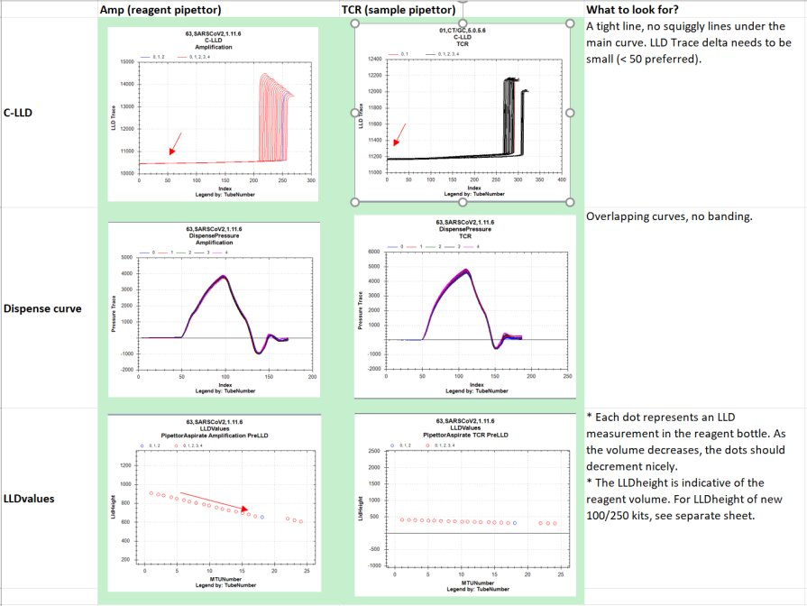
Reagent Pipettor – Reagent Preparation Issue
Initial data for this section:
- Customer complaint: RDFPM flags.
- Resolution: Customer used a different kit. No FSE
 Field Service Engineer. dispatch.
Field Service Engineer. dispatch.
Dispense Curve
DispensePressure Promoter:
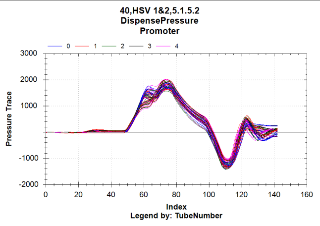
Note: Dispense curve looks off.
C-LLD Curve
C-LLD Promoter:
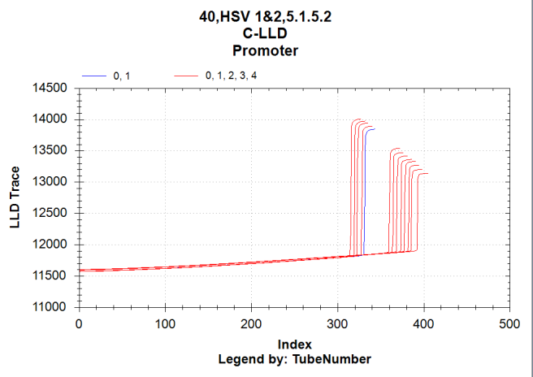
Note: Dispense curve looks off.
Reagent Pipettor – Foam in Reagent
Initial data for this section:
- Customer complaint: RVHSL on controls.
- Resolution: Use a different kit.
C-LLD Curve
C-LLD Amplification, Enzyme, Probe, and Select Curves
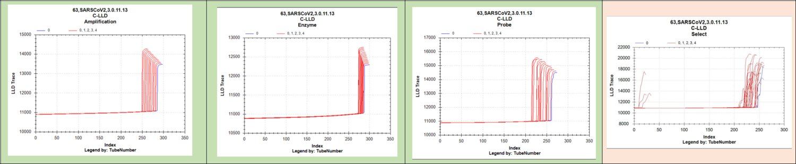
Note: Suspected foam in selection reagent.Aspiration Curve
Aspirator/Pressure Amplification, Enzyme, Probe, and Select Curves
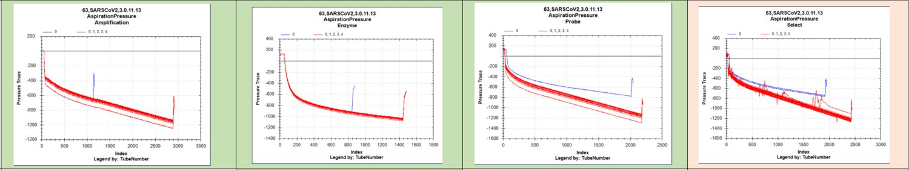
Note: Selection aspiration curves do not look good.
Dispense Curve
Dispense/Pressure Amplification, Enzyme, Probe, and Select Curves
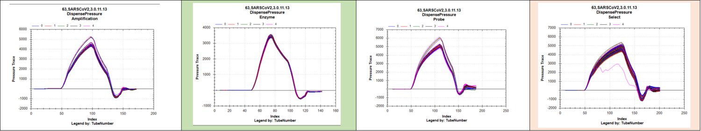
Note: Dispense curves shows banding (Tecan 117 tips), but this is not the issue here.
Reagent Pipettor – Sticky Plunger
Initial data for this section:
- Customer complaint: RDFX flags.
- Resolution: FSE replaced pipettor.
C-LLD Curve
In example below, C-LLD curve looks good.
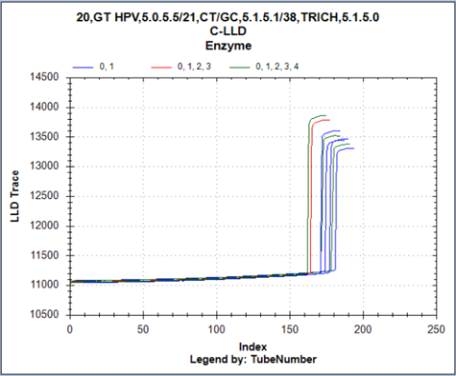
Dispense Curve
Example below shows an abnormal dispense curve.
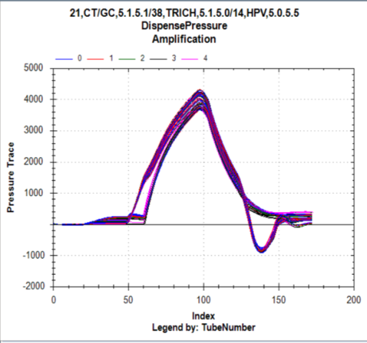
Aspiration Curve
Arrow indicates an issue with the aspiration curve: suspect sticky plunger. This will require service.
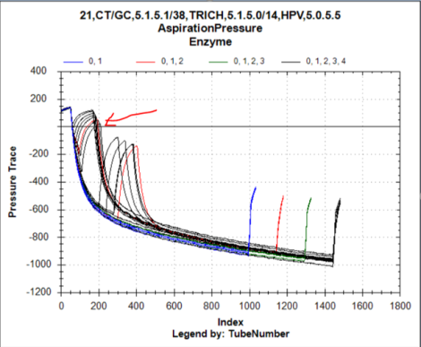
Reagent Pipettor – Tip Issue, Alternate Tip Software, Tecan Tips
Initial data for this section:
- Complaint: RDFA, RDFSL, PFR.
- Conclusion: This is a tip issue. No FSE dispatch.
C-LLD Curves
In examples below, C-LLD curves look perfect. They do not show a pipettor issue.
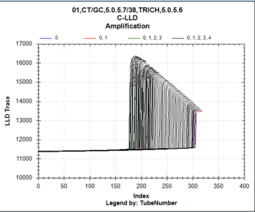
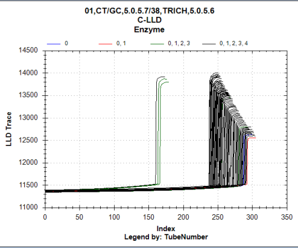
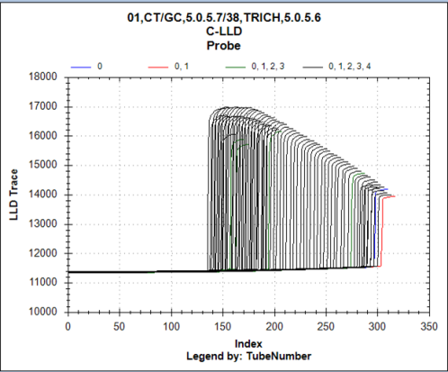
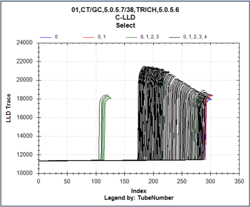
Dispense Curves
In examples below, banding in most curves suggest customer is most likely using alternative tips. The drop in the Amp curve corresponds to a PFR flag.
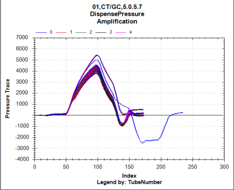
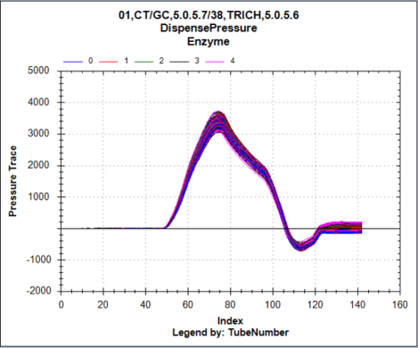
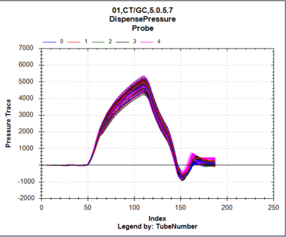
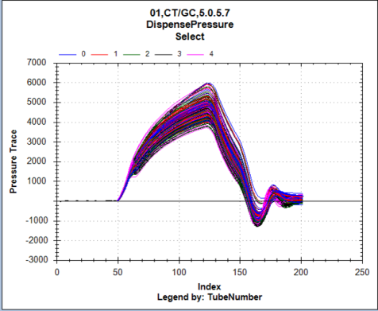
Reagent Pipettor – Tip Issue, No Alternate Tip Software, Tecan Tips
Initial data for this section:
- Complaint: RDFA, PFR.
- Resolution: This is a tip issue, no dispatch.
C-LLD Curves
In examples below, C-LLD curves look perfect. They do not show a pipettor issue.
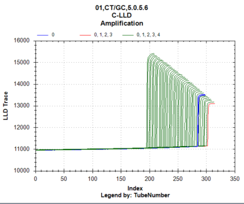
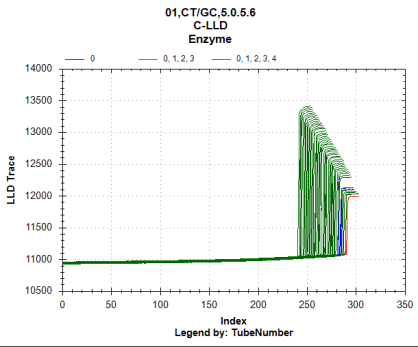
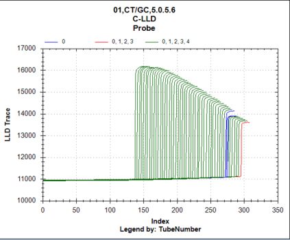
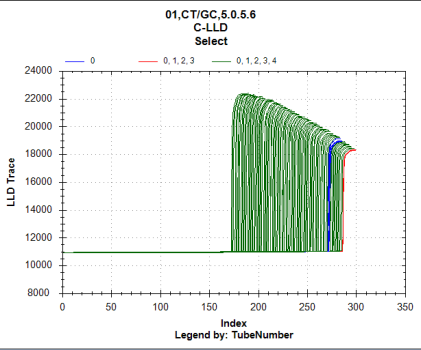
Dispense Curves
The drop in the Amplification curve shows the outliers - invalids with RDFA, PFR flags.
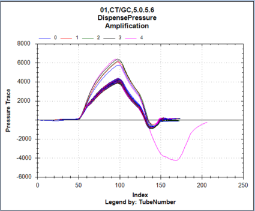
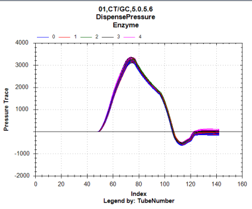
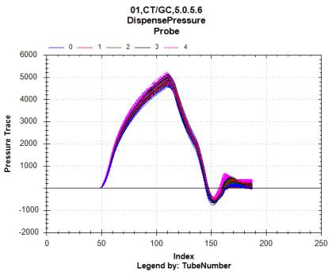
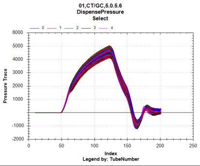
LLDValues
The LLDHeight jumps up and down. Since that is the case for all four reagents, it is unlikely to be due to bubbles.
TSE Technical Service Engineer. confirmed the fault is due to a tip issue.
Technical Service Engineer. confirmed the fault is due to a tip issue.
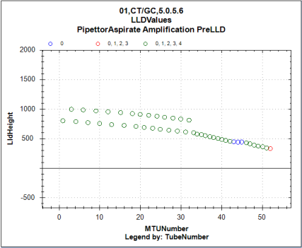
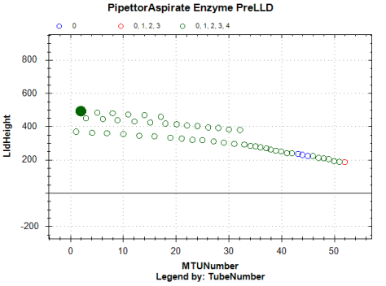
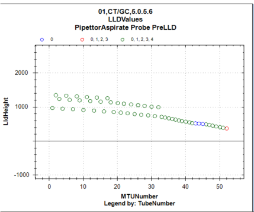
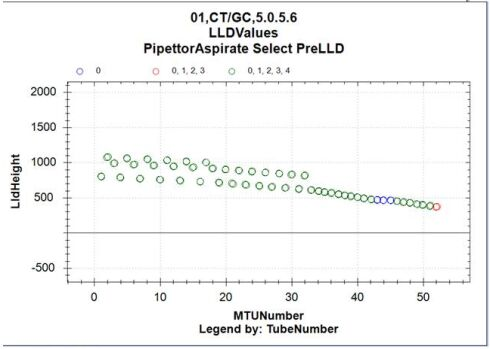
Reagent Pipettor – Tip Issue, Alternate Tip Software, Thermo Fisher Tips
Initial data for this section:
- Customer complaint: PFR/NTI.
- Resolution: This is a tip issue. No FSE dispatch.
C-LLD Curves
In examples below, C-LLD curves look perfect. They do not show a reagent pipettor issue.
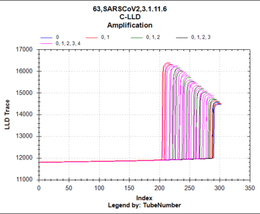
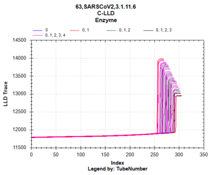
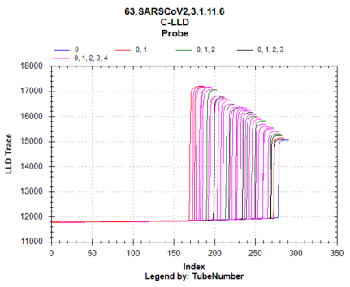
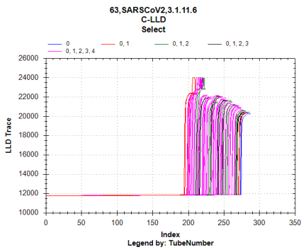
Dispense Curves
Banding indicates alternative tips - customer confirmed they are using Thermo Fisher tips. The drop in the Amplification curve corresponds to the sample with PFR flag. PFR flags are not related to the new alternate tip software, and can occur on both old and new software versions.
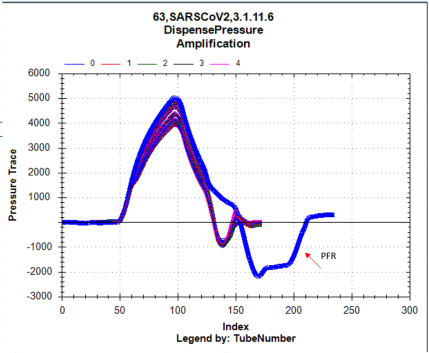
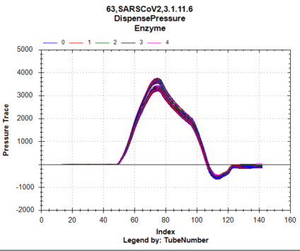
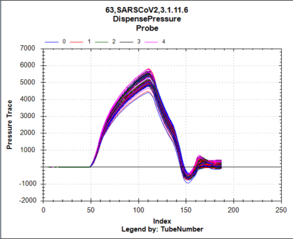
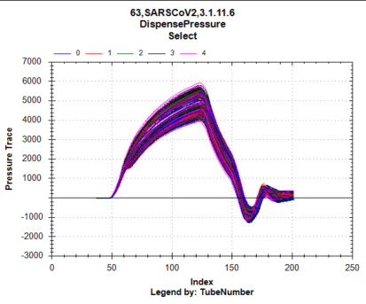
Reagent Pipettor – RBEX, Alternate Tips
Initial data for this section:
- Customer complaint: RBEE, RBEP.
- Resolution: FSE to clean gold lead contacts and install alternate tip software, since customer is using alternate tips.
C-LLD Enzyme and TCR Curves
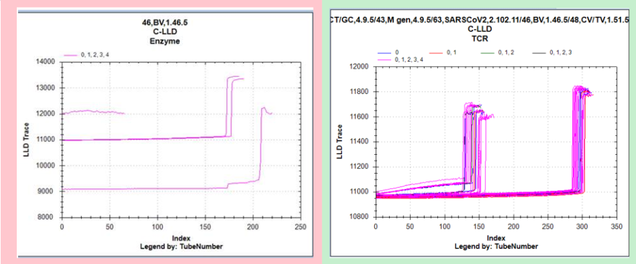
Notes:
Enzyme C_LLD looks poor (delta is >200). Thus FSE dispatch.
TCR C-LLD (sample pipettor) looks good, so unlikely the alterenate tips are the issue.
Sample Pipettor – VVFS/RDFS
Initial data for this section:
- Customer complaint: VVFS and RDFS.
- Resolution: FSE replaced pipettor.
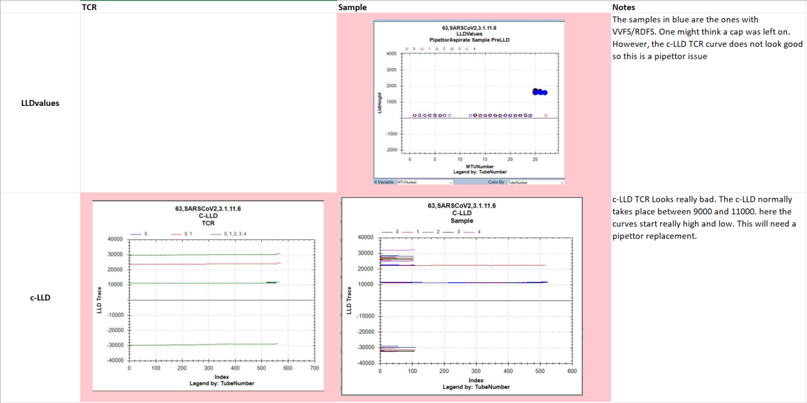
Sample Pipettor – VVFS
Initial data for this section:
- Customer complaint: Increased number of VVFS.
- Resolution: FSE cleaned DiTi and gold lead contacts.
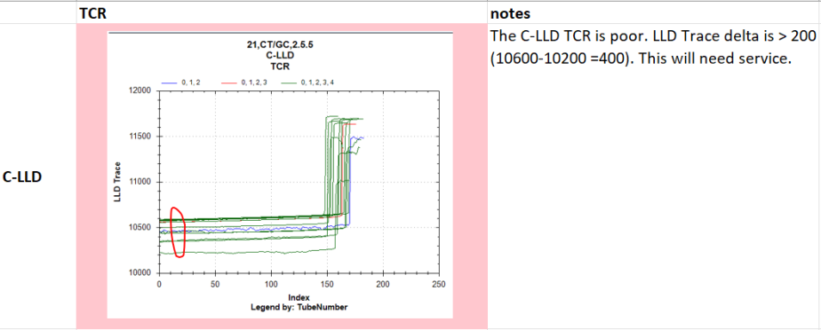
Sample Pipettor – Incorrect Pipettor Installation
Initial data for this section:
- Customer complaint: Increased number of VVFS/RDFS.
- Resolution: FSE replaced sample pipettor.
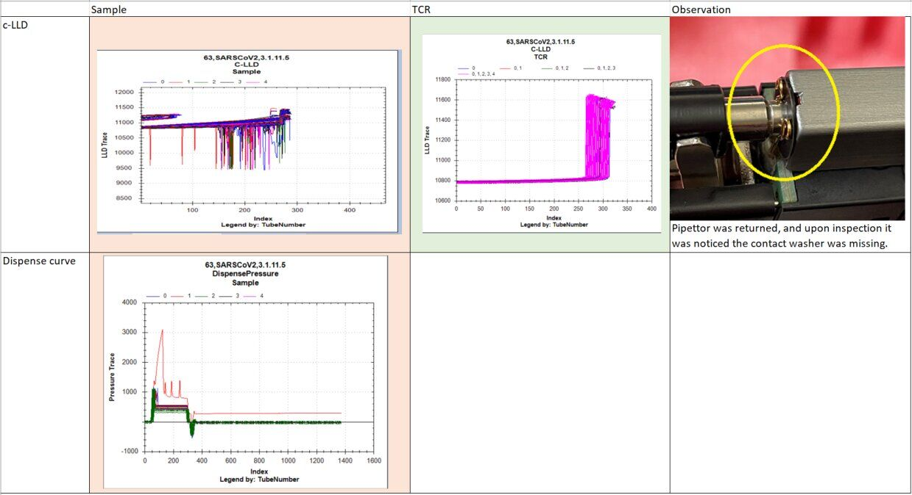
Sample Pipettor – Sample Cap Left On
Initial data for this section:
- Customer complaint: VVFS and RDFS on SarsCov2 controls.
- Resolution: Use controls without cap when using uncapped WF.
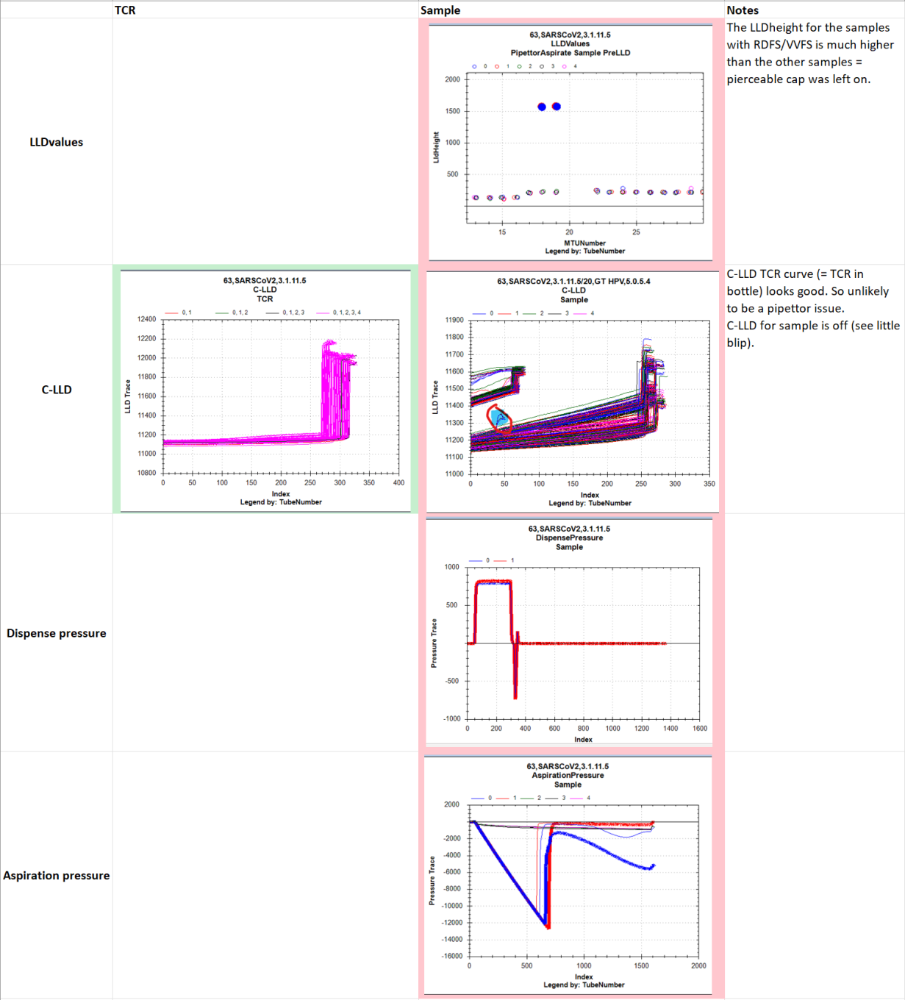
Initial LLD Height
Initial data for this section:
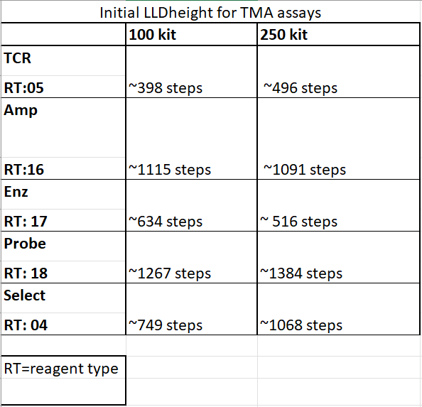
Examples:
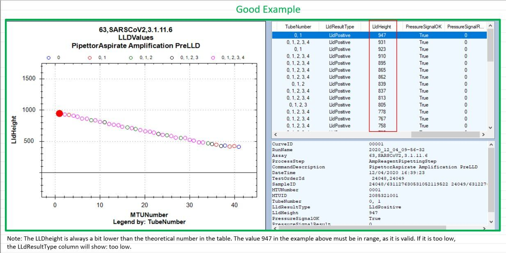
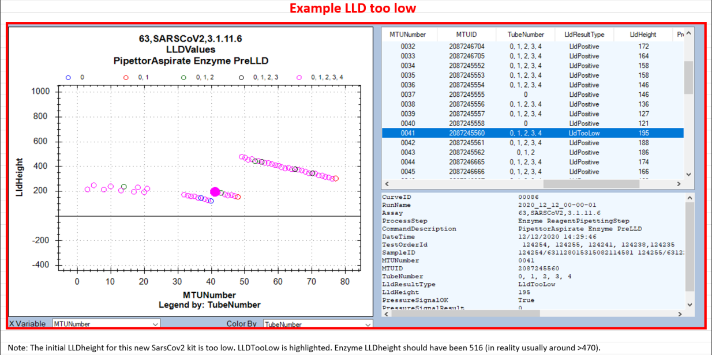
Validated Tips
Tecan tips:
10612513
30180117 (per CTB-00805 attached)
Biorear tips:
C30A0014-B13 (or MME-04110)
C30A0014-B17 (or MME-04128)
 button at the top of the page to send feedback, comments, or change requests.
button at the top of the page to send feedback, comments, or change requests.